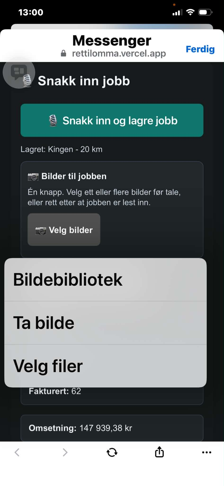
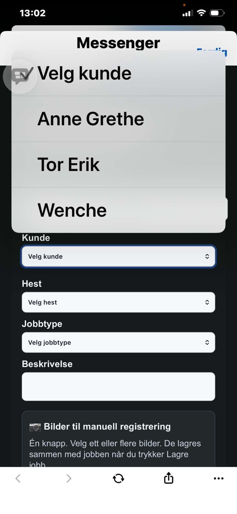
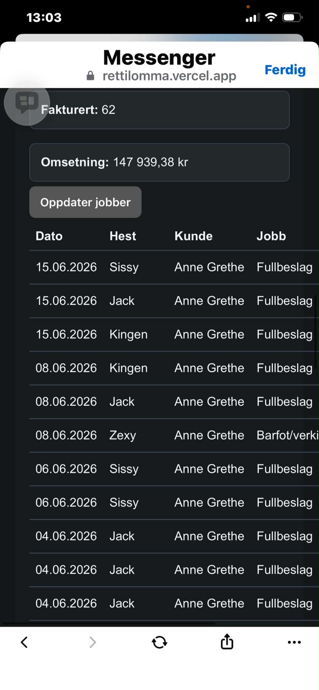
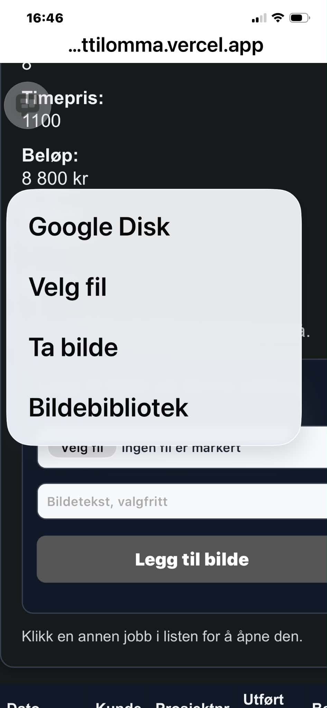

Kom raskt i gang
Legg inn navn, adresse, telefon og e-post.
Knytt hesten til riktig kunde/eier.
Bruk tale eller manuell registrering.
Velg ett eller flere bilder til jobben.
Faktura henter ufakturerte jobber for valgt kunde.
Snakk inn en jobb
På forsiden kan du bruke knappen Snakk inn og lagre jobb. Si hestenavn, jobbtype og kjøring.
Eksempel:
«Skodde Kingen fullbeslag, kjørte 20 kilometer.»
Systemet prøver å fylle inn kunde, hest, jobbtype, km og beløp automatisk.

Legg til bilder
Bruk bildeknappen for å legge til dokumentasjon på jobben. På mobil kan du vanligvis velge mellom kamera og bildebibliotek.
- Ta bilde brukes når du vil fotografere direkte.
- Bildebibliotek / Velg filer brukes når bildene allerede ligger på telefonen.
- Du kan legge inn flere bilder på samme jobb.
Manuell registrering
Velg Vis/skjul manuell registrering dersom du vil registrere jobben uten tale.
- Velg kunde.
- Velg hest.
- Velg jobbtype.
- Skriv eventuell beskrivelse.
- Legg inn beløp og kjøring.
- Legg til bilder hvis du ønsker dokumentasjon.
- Trykk Lagre jobb.

Jobbliste og status
Jobblisten viser registrerte jobber og summer.
- Ikke fakturert viser jobber som kan tas med på ny faktura.
- Fakturert viser jobber som allerede er sendt på faktura.
- Omsetning viser samlet registrert beløp.
Bruk Oppdater jobber hvis listen ikke viser siste endring.

Legg bilder på en eksisterende jobb
Hvis jobben allerede er lagret, kan du åpne jobben i listen og legge til bilder etterpå.
- Klikk på jobben i jobblisten.
- Velg bilde eller ta bilde.
- Skriv eventuell bildetekst.
- Trykk Legg til bilde.

Faktura
- Gå til Admin og åpne Faktura.
- Velg kunde.
- Trykk Lag faktura PDF.
- Systemet tar med ufakturerte jobber på valgt kunde.
Kontroller alltid faktura før den sendes. Når en jobb er fakturert, skal den ikke komme med på ny faktura.
Tips ved feil
- Ser du ikke nye jobber? Trykk Oppdater jobber.
- Finner ikke systemet hesten ved tale? Si hestenavnet tydelig og bruk manuell registrering ved behov.
- Bildemenyen på mobil styres av telefonen. Den kan vise «Ta bilde», «Bildebibliotek», «Velg fil» eller lignende.
- Hvis en kunde ikke vises, gå til kunder og sjekk at kunden er lagret.